数学
符号、乘方与去括号防错
中考计算保底与防错
核心通法/口诀：－(a－b＋c)＝－a＋b－c；－aⁿ 与 (－a)ⁿ 偶数次幂互为相反数。
中考计算丢分 70% 出在负号和去括号：先定符号，再算绝对值，步步落纸不跳步。
9 道配套分层题与大题
直达 4 步微课 →
数学几何/函数压轴 32 个 ＋ 物理实验/力电综合 13 个 ＋ 化学工艺/探究 14 个。每个模型均可 1 秒直达「名师 4 步通关微课＋分层变式＋规范解答大题」，支持开启零透字背诵遮罩与一键打印 A4 贴桌速查手册。
当前展示 59 / 59 个初中数理化名师压轴模型 · 全量免费在线速查
中考计算保底与防错
核心通法/口诀：－(a－b＋c)＝－a＋b－c；－aⁿ 与 (－a)ⁿ 偶数次幂互为相反数。
中考计算丢分 70% 出在负号和去括号：先定符号，再算绝对值，步步落纸不跳步。
中考计算保底与防错
核心通法/口诀：a⁰＝1（a≠0）；(a/b)⁻ⁿ＝(b/a)ⁿ；√(a²)＝|a|；|√3－2|＝2－√3。
中考解答题第 1 题固定送分题（6～8 分）：通常把零指数幂、负整数指数幂、绝对值、二次根式、特殊角三角函数混在一道题里。
中考计算保底与防错
核心通法/口诀：自选代入值排雷清单：① 原式各分母≠0；② 除号后分式的分子≠0！
中考解答题第 2 题常见保底题：先算括号内（通分），再把除法变乘法（分子分母因式分解后约分），最后代入求值。
中考计算保底与防错
核心通法/口诀：检验习惯：解出方程后花 5 秒代回原方程口算，100% 消灭低级失误！
四大保底防错铁律：① 去分母常数项不漏乘；② 不等式乘除负数必变号；③ 分式方程必验增根；④ 一元二次方程不乱除未知数。
全等与辅助线模型
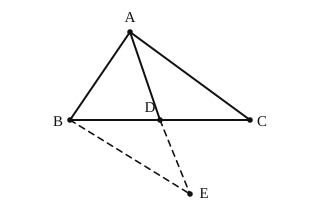
核心通法/口诀：中线取值范围公式：|AB－AC|/2 ＜ AD ＜ (AB＋AC)/2。
遇到三角形中线（或中点），把中线延长一倍（如延长 AD 到 E 使 DE＝AD），连接 BE，立刻构造“8 字型全等” △ADC≌△EDB！
全等与辅助线模型
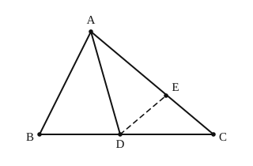
核心通法/口诀：常见触发条件：题目中出现“角平分线＋a＋b＝c”或“2 倍角关系”！
要证明“一条长线段等于两条短线段之和”（如 AC＝AB＋BD），常用截长补短法：
全等与辅助线模型
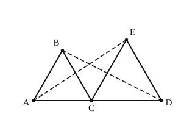
核心通法/口诀：口诀：共顶点是旋转中心，左手拉左手、右手拉右手，必全等！
两个共顶点的等边三角形 / 等腰直角三角形 / 正方形，对应边相连必有 SAS 全等。
全等与辅助线模型
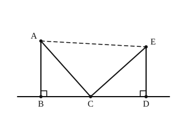
核心通法/口诀：一线三直角＋等腰直角（AC＝CE）⇒ △ABC≌△CDE ⇒ BD＝AB＋DE（或 |AB－DE|）。
一条直线上依次出现三个相等的角（最常见是三个 90° 直角：∠B＝∠ACE＝∠D＝90°），通过互余倒角必得 ∠A＝∠ECD，从而两三角形相似；若再有一组对应边相等（如 AC＝CE），则必全等（AAS）！
全等与辅助线模型
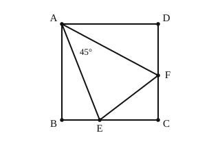
核心通法/口诀：四大秒杀结论：① EF＝BE＋DF；② △CEF 周长＝2AB；③ 点 A 到 EF 的距离＝AB；④ S△AEF＝1/2·EF·AB。
正方形 ABCD 中，点 E 在 BC、F 在 CD 上且 ∠EAF＝45°：把 △ABE 绕点 A 逆时针旋转 90° 使 AB 与 AD 重合，把分散的两个半角拼成一个完整的 45° 角，立得 SAS 全等！
全等与辅助线模型
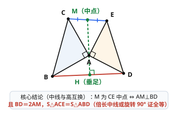
核心通法/口诀：中点 ⇔ 垂直：M 为 CE 中点 ⇔ AM⊥BD，且 BD＝2AM，S△ACE＝S△ABD。
共顶点 A 的两个等腰直角三角形 △ABC 与 △ADE（∠BAC＝∠DAE＝90°，AB＝AC，AD＝AE），连接 CE、BD，过 A 作 CE 的中线 AM 并反向延长交 BD 于 H，必有三大黄金结论：
全等与辅助线模型
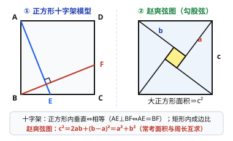
核心通法/口诀：正方形十字架：EF⊥GH ⇔ EF＝GH；矩形十字架：AE⊥BF ⇒ AE/BF＝AB/BC；赵爽弦图：S大＝c²，S小＝(b－a)²，4S△＝S大－S小＝2ab。
正方形十字架：正方形 ABCD 内，任意两条连接对边且互相垂直的线段 EF⊥GH（无论是否经过顶点），平移构全等直角三角形，必有“垂直 ⇔ 相等（EF＝GH）”！
全等与辅助线模型
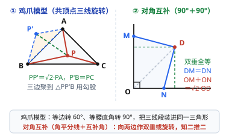
核心通法/口诀：鸡爪旋转倍长：转 60° 得 PP'＝PA；转 90° 得 PP'＝√2·PA；对角互补 90°＋90°：OM＋ON＝√2·OD，S四边形＝1/2·OD²。
鸡爪模型：等边三角形、等腰直角三角形或正方形内部（或外部）一点 P 连向三个顶点形成三条“鸡爪”线段。通法：将含两条爪线的三角形绕顶角旋转（等边转 60°、等腰直角/正方形转 90°），把分散三线段装进同一个三角形，再用勾股逆定理秒求角度！
全等与辅助线模型
核心通法/口诀：猪蹄 ∠E＝∠1＋∠2；铅笔 ∠1＋∠E＋∠2＝360°；锯齿 ∑左＝∑右；建系垂直 k₁·k₂＝－1；斜化直 PQ＝√(1＋k²)·|xP－xQ|。
平行线四大拐点模型（通法：过每个拐点作已知平行线的平行线）：① 猪蹄（M 型）：中间角等于上下两角之和（∠E＝∠1＋∠2）；② 铅笔（凸型）：三个内角和为 360°（∠1＋∠E＋∠2＝360°）；③ 锯齿（多拐点）：向左开口角之和＝向右开口角之和；④ 鹰嘴（折返型）：拐点角等于两平行线夹角之差（∠E＝∠1－∠2）！
相似与圆综合压轴
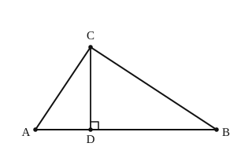
核心通法/口诀：CD²＝AD·BD；AC²＝AD·AB；BC²＝BD·AB；AC·BC＝AB·CD。
母子型相似：公共角＋一组等角 ⇒ 公共边²＝短段×长段（AC²＝AD·AB）。
相似与圆综合压轴
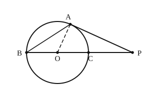
核心通法/口诀：经典三连：① 见切点连半径得 90°；② 见直径连弦得 90°；③ 设半径 r 列勾股方程或相似比例！
中考倒数第 2/3 题高频大题：圆＋直径（90°）＋切线（90°）＋等腰半径（OA＝OB）⇒ 倒角证平行或相似，再结合勾股定理/三角函数求半径或线段。
相似与圆综合压轴
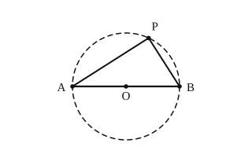
核心通法/口诀：找到隐圆后，动点到定点 Q 的最值立刻用“一箭穿心”：最小值＝|OQ－r|，最大值＝OQ＋r！
题目不画圆，但动点轨迹其实是圆，识别三大隐圆信号：
相似与圆综合压轴
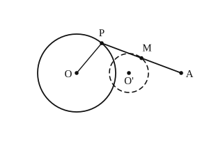
核心通法/口诀：中点轨迹：P 在圆 O（半径 R）上，A 为定点，M 为 AP 中点 ⇒ M 在以 OA 中点 O' 为圆心、R/2 为半径的圆上！
瓜豆原理（主从联动）：定点 A，主动点 P 和从动点 M 满足“AM/AP＝定比 k，∠PAM＝定角 α”，则从动点 M 的轨迹形状与主动点 P 完全相同！
几何最值压轴模型
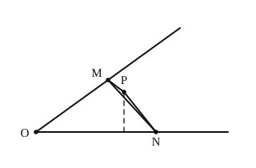
核心通法/口诀：若 ∠AOB＝α，OP＝d，则 ∠P₁OP₂＝2α，OP₁＝OP₂＝d。；特例：α＝30° 时 ∠P₁OP₂＝60° ⇒ △OP₁P₂ 等边，最小周长＝d；α＝45° 时 ∠P₁OP₂＝90° ⇒ 最小周长＝√2 d！
角内一定点 P，两边上各有一动点 M、N，求 △PMN 周长最小值：分别作 P 关于两边的对称点 P₁、P₂，连 P₁P₂ 即为最小周长！
几何最值压轴模型
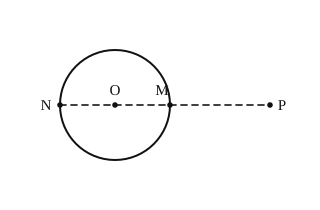
核心通法/口诀：圆心 O 到直线 l 距离为 d，圆上动点到直线 l 距离：最小 d－r，最大 d＋r（相离时）。
动点在直线上，定点到直线的最短距离是垂线段长度。
几何最值压轴模型
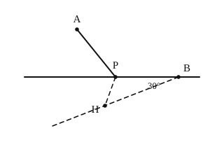
核心通法/口诀：常见系数：k＝1/2 构造 30° 角；k＝√2/2 构造 45° 角；k＝√3/2 构造 60° 角！
动点 P 在定直线 l 上，求 PA＋k·PB（0＜k＜1）的最小值：不能直接连线段，先把带系数的 k·PB 转化成一条垂线段 PH！
几何最值压轴模型
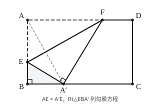
核心通法/口诀：矩形 ABCD 中把点 B 沿过点 A 的折痕折到 B'：AB'＝AB（定长），故点 B' 在以 A 为圆心、AB 为半径的圆上，对角线 AC 上取到最小值 B'C＝AC－AB。
“折叠＋定点”＝隐圆！把定点 C 沿过另一不动点（如 A）的折痕折叠，对应点 C' 满足 AC'＝AC（定长），故 C' 在以 A 为圆心、AC 为半径的圆上！
几何最值压轴模型
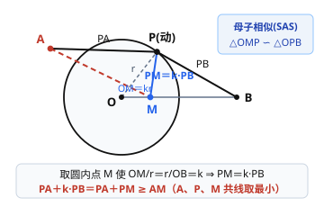
核心通法/口诀：取圆内点 M 使 OM/r＝r/OB＝k ⇒ △OMP∽△OPB ⇒ PM＝k·PB ⇒ (PA＋k·PB)_min＝AM。
动点 P 在定圆 O（半径 r）上运动，求 PA＋k·PB（k≠1）的最小值，称为“阿氏圆模型”！对比口诀：点在直线上跑用“胡不归”，点在圆弧上跑用“阿氏圆”！
几何最值压轴模型
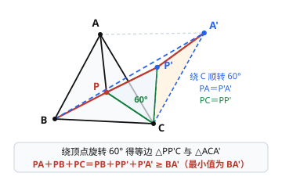
核心通法/口诀：标准费马点（PA＋PB＋PC）：绕顶点向外转 60°；加权费马点（PA＋PB＋√2·PC）：绕 C 向外转 90°；若某内角 ≥120°，费马点即该钝角顶点！
在所有内角都小于 120° 的 △ABC 内部找一点 P，使 PA＋PB＋PC 最小，该点称为费马点（取最小时 ∠APB＝∠BPC＝∠CPA＝120°）。
几何最值压轴模型
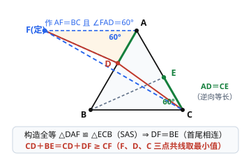
核心通法/口诀：见逆等线（AD＝CE）⇒ 作定长定角 AF 证 △DAF≌△ECB（SAS）⇒ CD＋BE＝CD＋DF ≥ CF。
两条动线段长度相等（如 AD＝CE），各自沿两条定直线运动，要求另外两条不共端点的线段之和（如 CD＋BE）的最小值，称为“逆等线模型”！
二次函数压轴综合
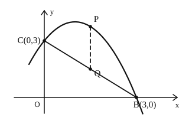
核心通法/口诀：S△PBC 最大 ⇔ 铅垂高 PQ 最大 ⇔ t 取 B、C 两点横坐标的中点 (xB＋xC)/2（对称轴定理，秒杀！）。
斜三角形 △PBC 面积最值通法：过动点 P(t, yP) 作 y 轴平行线交直线 BC 于 Q(t, yQ)，则 S△PBC＝1/2 × 铅垂高 |yP－yQ| × 水平宽 |xB－xC|。
二次函数压轴综合
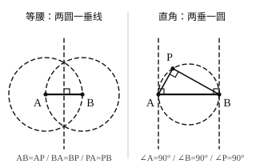
核心通法/口诀：代数法：写出 AB²、AP²、BP²，等腰列两两相等，直角列勾股定理三类方程！
等腰三角形存在性（两圆一线法）：给定两定点 A、B，分三类讨论——以 A 为顶点（AB＝AP）、以 B 为顶点（BA＝BP）、以 P 为顶点（PA＝PB，即 AB 垂直平分线）！
二次函数压轴综合
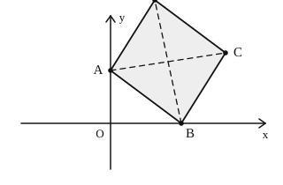
核心通法/口诀：若 A、C 为相对顶点，B、D 为相对顶点：xA＋xC＝xB＋xD 且 yA＋yC＝yB＋yD！；已知三定点 A、B、C 求第四点 D（无字母顺序限制）：三类对角线（AB、AC、BC），直接套 D＝A＋B－C、A＋C－B、B＋C－A！
平行四边形对角线互相平分 ⇔ 两条对角线的中点重合 ⇔ 相对两顶点坐标之和相等！
二次函数压轴综合
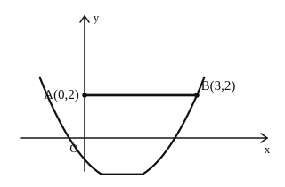
核心通法/口诀：步骤：代端点坐标算临界参数 → 算相切/顶点临界参数 → 结合开口与平移方向检验端点等号！
含参抛物线与给定线段 AB 恰有 1 个或 2 个交点，关键是画出动态草图，找到两个临界状态：
二次函数压轴综合
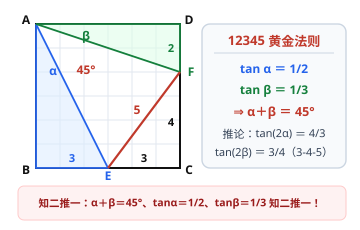
核心通法/口诀：α＋β＝45° 且 tan α＝1/2 ⇔ tan β＝1/3；推论：tan(2α)＝4/3，tan(2β)＝3/4。
12345 黄金模型：若两个锐角 α、β 满足 α＋β＝45°，且其中一个正切值 tan α＝1/2，则另一个必有 tan β＝1/3（三个条件知二推一）！
代数压轴与中考新定义
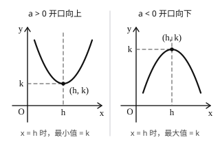
核心通法/口诀：x²＋y²－2x＋4y＋8＝(x－1)²＋(y＋2)²＋3≥3（最小值为 3）。
降次整体代入：若已知 x²－3x＝1，不要硬解无理根，反复把 x² 替换成 3x＋1 降次！
代数压轴与中考新定义
核心通法/口诀：方程与不等式综合：先解方程组用参数表示 x、y，再代入不等式求参数范围！
“解为整数”问题：先把未知数 x 用参数 m 表示成分式（如 x＝6/(m＋1)），再根据整除性列出分母的所有整数因数（别漏负因数！）
代数压轴与中考新定义
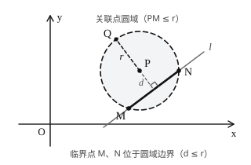
核心通法/口诀：裂项相消：1/[n(n＋1)]＝1/n－1/(n＋1)；周期规律：第 N 项看 N÷周期 的余数。
新定义题不要被陌生名词吓住：核心就是“照着定义翻译成熟悉的方程、不等式或几何关系”！
动态电路与电功率安全最值压轴
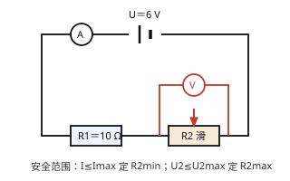
核心通法/口诀：P总max＝UImax；P总min＝UImin；滑变功率极值条件 R2＝R1。
求滑变最小阻值 R2min：看电路允许最大电流 Imax（取电流表量程、滑变允许电流、灯泡额定电流三者的最小值），R总min＝U/Imax，R2min＝R总min－R1。
动态电路与电功率安全最值压轴
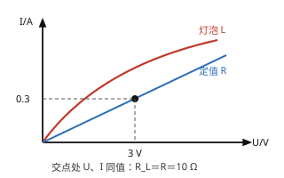
核心通法/口诀：交点意义：两条 I-U 曲线的交点表示该电压下两元件电流相等、电阻相等、电功率相等！
小灯泡的 I-U 图像是曲线（电阻随温度升高而增大），解题绝对不能假定灯泡电阻不变，必须直接从图上读对应点 (U, I)！
动态电路与电功率安全最值压轴
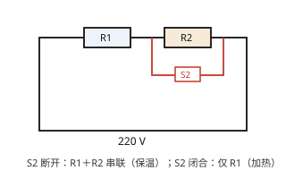
核心通法/口诀：R并＜R1＜R2＜R串 ⇔ P并＞P1＞P2＞P串。
多挡位电热器核心公式：电源电压 U＝220 V 不变，由 P＝U²/R总 知：总电阻越小，功率越大（高温/加热挡）；总电阻越大，功率越小（低温/保温挡）！
浮力与压强综合压轴
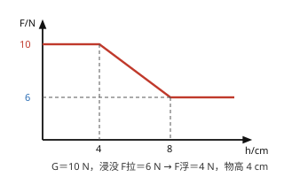
核心通法/口诀：F浮＝G－F低；V物＝F浮/(ρ水g)；ρ物＝G·ρ水/F浮；底面积 S物＝V物/H。
物体从水面缓缓下放至浸没的 F-h 图像分三段：水平高台（空气中，F＝G）→ 斜向下坡（浸入过程，F浮 线性增大）→ 水平低台（完全浸没，F＝G－F浮最大）。
浮力与压强综合压轴
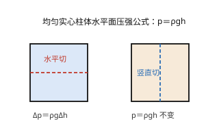
核心通法/口诀：p柱＝ρgh；切去相同质量 Δp＝Δmg/S；切去相同体积 Δp＝ρΔVg/S。
均匀实心柱体水平切割：切去相同厚度 Δh，压强变化量 Δp＝ρgΔh；切去相同质量 Δm，压强变化量 Δp＝Δmg/S；切去相同比例 k，剩余压强 p′＝(1－k)p。
浮力与压强综合压轴
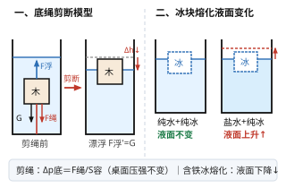
核心通法/口诀：剪断底部拉绳：ΔV排＝(F浮浸－G木)/(ρ水g)＝F绳/(ρ水g)；Δp底＝F绳/S容。
剪绳模型（容器底用细线拉着浸没木块，F浮＞G木）：剪断细线木块上浮至漂浮，V排 减小 → 液面下降 Δh＝ΔV排/S容 → 容器底液体压强减小 Δp＝ΔF浮/S容＝F拉/S容！
功、机械效率与力热电综合压轴
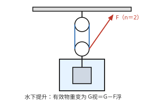
核心通法/口诀：水下机械效率 η水＝(G物－F浮)/(G物－F浮＋G动)；出水后 η空＝G物/(G物＋G动)＞η水。
滑轮组打捞水下重物：物体浸没水中时，绳子对物体的拉力 T＝G物－F浮（视重！），故绳端拉力 F＝(G物－F浮＋G动)/n，有用功 W有＝T·h＝(G物－F浮)h！
功、机械效率与力热电综合压轴
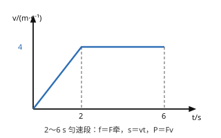
核心通法/口诀：匀速段：F＝f，s＝vt，W＝Fs，P＝Fv；v-t 图像与时间轴围成的面积＝路程 s！
双图联动题（v-t 图 ＋ F-t 图）黄金突破口：先在 v-t 图中找“水平直线段（匀速直线运动）”，去 F-t 图读出该时间段的拉力，直接得出滑动摩擦力 f＝F匀速！
功、机械效率与力热电综合压轴
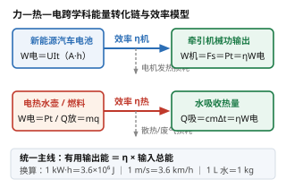
核心通法/口诀：能量链：输入总能（W电 或 Q放）× 效率 η ＝ 有用输出能（Fs 或 cmΔt）。
新能源汽车综合：电功 W电＝UIt（或电池容量 Ah×U）→ 机械功 W机＝ηW电＝Fs＝Pt；对比燃油车：Q放＝mq，W机＝η热Q放。
功、机械效率与力热电综合压轴
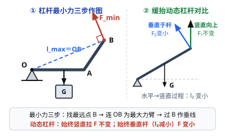
核心通法/口诀：最小力：F_min＝(F₂·l₂)/OB_max；滚筒上台阶最长力臂 l_max＝2R（直径），阻力臂 l₂＝√(R²－(R－h)²)。
杠杆最小力作图三步铁律：由 F₁l₁＝F₂l₂，阻力与阻力臂一定时，动力臂最长 ⇔ 动力最小！① 找杠杆上离支点 O 最远的作用点 B；② 连接 OB 作为最长动力臂 l_max；③ 过 B 作 OB 垂线，按“反向转动”定方向并标直角符号！
核心实验探究与特殊测量压轴
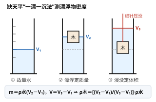
核心通法/口诀：核心思想：缺量筒→用“水质量/ρ水”代体积；缺天平→用“漂浮排开水质量”代物体质量！
缺量筒（只有天平、烧杯、水）：① 测石块质量 m；② 烧杯装满水测 m1；③ 放入石块溢水后测总质量 m2 → m排＝m＋m1－m2，V石＝m排/ρ水，ρ石＝m·ρ水/(m＋m1－m2)。
核心实验探究与特殊测量压轴
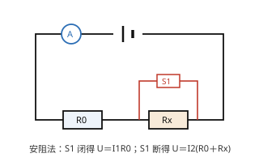
核心通法/口诀：安阻法核心：电源电压 U 相等；伏阻法核心：串联电流 I 相等！
安阻法（缺电压表，有电流表＋已知 R0）：利用两次开关状态电源电压 U 不变列方程！串联：I1R0＝I2(R0＋Rx)→Rx＝[(I1－I2)/I2]R0；并联：I1R0＝I2Rx→Rx＝(I1/I2)R0。
核心实验探究与特殊测量压轴
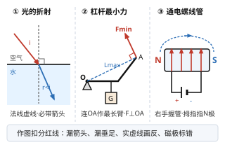
核心通法/口诀：实验设计铁律：探究规律类（测电阻外）换多组不同规格器材是为了“避免偶然性、得出普遍规律”；测量定值类（测长度、定值电阻、密度）多次测量是为了“求平均值减小误差”。
光学作图三铁律：法线画虚线且标垂足；平面镜虚像画虚线且物像连线垂直镜面；光线必带箭头且不可漏画！
工业工艺流程压轴
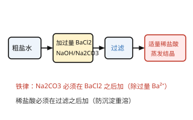
核心通法/口诀：合法加药顺序共 3 种：① BaCl2→NaOH→Na2CO3；② BaCl2→Na2CO3→NaOH；③ NaOH→BaCl2→Na2CO3。
除粗盐中 CaCl2、MgCl2、Na2SO4：分别加过量 Na2CO3（除 Ca²⁺ 及过量 Ba²⁺）、NaOH（除 Mg²⁺）、BaCl2（除 SO4²⁻），过滤后向滤液加适量稀盐酸（除过量 OH⁻、CO3²⁻），最后蒸发结晶。
工业工艺流程压轴
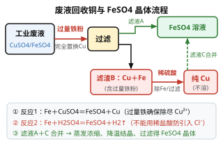
核心通法/口诀：Fe＋CuSO4＝FeSO4＋Cu；Fe＋H2SO4＝FeSO4＋H2↑（切记用稀硫酸而不是稀盐酸，防引入 Cl⁻！）。
从含 CuSO4、FeSO4 的废液中回收金属铜并得 FeSO4 晶体：① 加“过量铁粉”（换出全部 Cu，不引新金属杂质）；② 过滤得滤渣（Cu＋过量 Fe）和滤液（FeSO4）；③ 滤渣加适量“稀硫酸”除过量 Fe，过滤洗净得纯 Cu！
工业工艺流程压轴
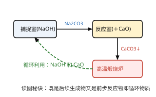
核心通法/口诀：喷淋法吸收 CO2 优点：增大气体与碱液的接触面积，使 CO2 吸收更充分！
“碳捕捉”典型工艺：捕捉室（2NaOH＋CO2＝Na2CO3＋H2O）→ 反应室（CaO＋H2O＝Ca(OH)2，Ca(OH)2＋Na2CO3＝CaCO3↓＋2NaOH）→ 高温煅烧炉（CaCO3＝(高温)CaO＋CO2↑）。
框图推断与离子共存压轴
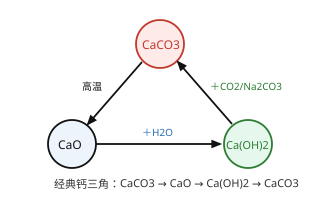
核心通法/口诀：元素组成相同气体：CO 与 CO2；元素组成相同液体：H2O2 与 H2O！
必背颜色题眼：黑色固体（C、CuO、Fe3O4、MnO2、铁粉）；红色固体（Cu、Fe2O3 红棕）；蓝色溶液 Cu²⁺；浅绿色 Fe²⁺；黄色 Fe³⁺；蓝色沉淀 Cu(OH)2；红褐色沉淀 Fe(OH)3。
框图推断与离子共存压轴
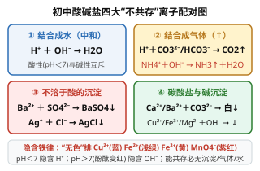
核心通法/口诀：万能共存五剑客：K⁺、Na⁺、NO3⁻ 在初中水溶液中几乎不与任何离子反应！
审题先挖“隐含离子”：① pH＜7 / 遇石蕊变红 / 强酸性 → 隐含大量 H⁺；② pH＞7 / 遇酚酞变红 / 强碱性 → 隐含大量 OH⁻；③ 无色透明溶液 → 排除 Cu²⁺(蓝)、Fe²⁺(浅绿)、Fe³⁺(黄)、MnO4⁻(紫红)！
框图推断与离子共存压轴
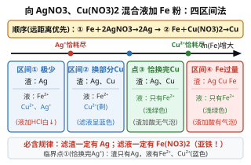
核心通法/口诀：检验技巧：向滤渣加稀盐酸有气泡 → 加入金属过量！向滤液加稀盐酸有白色沉淀（AgCl）→ AgNO3 剩余！
核心法则：“弱者先出，强者后出”（远距离优先置换）！例如向 AgNO3、Cu(NO3)2 混合液加 Zn 粉：先发生 Zn＋2AgNO3→2Ag，Ag⁺ 耗尽后才发生 Zn＋Cu(NO3)2→Cu！
实验探究（变质/成分/除杂鉴别）压轴
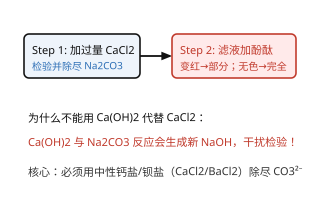
核心通法/口诀：除杂（NaOH 溶液中除少量 Na2CO3）：加适量 Ca(OH)2 溶液过滤（Ca(OH)2＋Na2CO3＝CaCO3↓＋2NaOH）！
NaOH 变质原因：2NaOH＋CO2＝Na2CO3＋H2O。检验是否变质（检 CO3²⁻）：加过量稀盐酸（看气泡）或 CaCl2/BaCl2 溶液（看白沉淀）或 Ca(OH)2（看白沉淀）。
实验探究（变质/成分/除杂鉴别）压轴
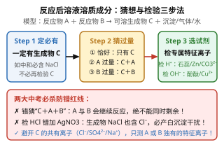
核心通法/口诀：例：Ca(OH)2＋Na2CO3→CaCO3↓＋2NaOH，过滤后滤液溶质 3 猜想：① NaOH；② NaOH＋Ca(OH)2；③ NaOH＋Na2CO3。
溶质猜想黄金模型（A＋B → C＋沉淀/气体/水）：反应后溶液中“一定有生成物 C”，且反应物 A 和 B “绝不能同时剩余”（因为会继续反应！）。
实验探究（变质/成分/除杂鉴别）压轴
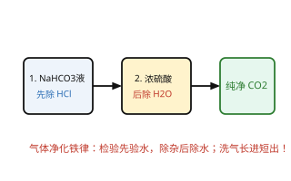
核心通法/口诀：CO2 中混有 HCl 和 H2O：先通饱和 NaHCO3 溶液除 HCl，再通浓硫酸干燥！
气体检验与除杂终极铁律：“检验先验水（无水 CuSO4 变蓝），除杂后除水（浓硫酸/碱石灰最后干燥）！”
实验探究（变质/成分/除杂鉴别）压轴
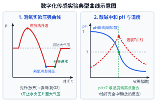
核心通法/口诀：传感读图口诀：“起点定原液，拐点定恰反，峰值看放热，气压看温气！”
压强曲线破题：密闭容器中“放热或产气→压强增大，耗气或吸热→压强减小”。测氧实验（红磷燃烧）三段曲：先急升（燃烧放热影响大于耗氧）→再骤降（耗氧冷却至室温，压强低于大气压）→开止水夹回升（水倒吸恢复常压）。
实验探究（变质/成分/除杂鉴别）压轴
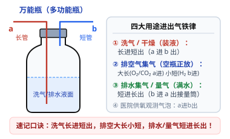
核心通法/口诀：速记口诀：洗气长进短出，排空大长小短（倒放相反），排水/量气短进长出；检验先验水，除杂后除水！
万能瓶（长管 a、短管 b，正放）四大用途进出气铁律：① 洗气/干燥（装液）：长进短出（a 进 b 出），让气体充分接触试剂；② 排空气集气（空瓶正放）：密度大长进短出（如 O₂、CO₂ 从 a 进），密度小小短进长出（如 H₂、CH₄ 从 b 进）；③ 排水集气/量气（装满水）：短进长出（b 进 a 出，a 端接量筒测体积）；④ 医院供氧控流速：a 进 b 出看气泡！
化学图像与综合计算压轴
核心通法/口诀：图像三看：看起点（是否从原点出发）、看拐点（代表某反应恰好完全）、看平台（代表反应彻底结束）！
酸碱盐混合液滴加试剂“酸碱中和优先”铁律：① 向 HCl＋CuCl2（或 FeCl3/MgCl2）中滴加 NaOH → 先中和 HCl（无沉淀，起点延迟在横轴上！），HCl 耗尽后才生成 Cu(OH)2 沉淀！
化学图像与综合计算压轴
核心通法/口诀：守恒核心：某元素质量＝化合物质量×该元素质量分数，反应前后恒等！
元素守恒法（极速秒杀多步复杂反应！）：若某元素全部从反应物转移到最终产物中，无需写中间每一步方程式，直接列“元素质量相等”即可！
化学图像与综合计算压轴
核心通法/口诀：m液后＝m加入总 － m不溶杂 － m↓ － m↑；ω＝(m质后/m液后)×100%。
中考最后一道压轴大题终极模板：求反应后所得溶液的溶质质量分数 ω＝[m(溶质)/m(反应后溶液)]×100%！
不只是看模型结论：点开任意模型即可刷分层题、做规范解答大题、错题换一道变式题防背答案，还能一键印出专属 A4 补缺卷。